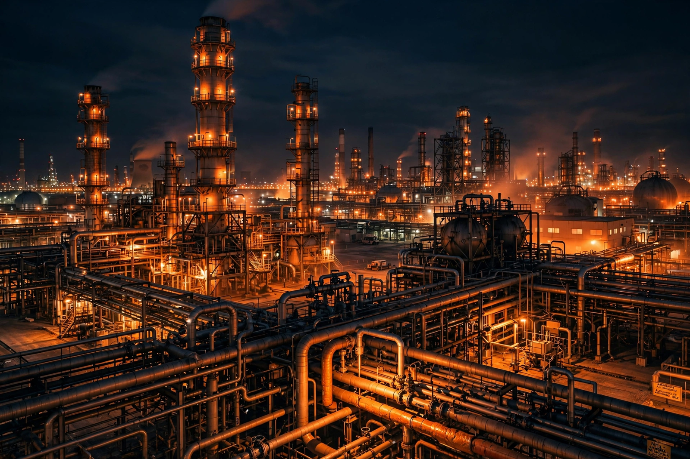

Haber–Bosch process
From Wikipedia, the free encyclopedia

The Haber–Bosch process is an industrial process for producing Ammonia from nitrogen and hydrogen gases over an iron catalyst at high temperature and pressure (N₂ + 3H₂ → 2NH₃). Developed by Fritz Haber in 1909 and scaled up by Carl Bosch at BASF by 1913, it underpins the manufacture of synthetic fertilisers that support roughly half of humanity's food supply — and consumes an estimated 1–2% of global energy production.
Development
Haber demonstrated ammonia synthesis at laboratory scale in 1909 (his table-top apparatus produced 125 ml per hour). Bosch solved the brutal engineering — high-pressure vessels whose steel walls hydrogen attacked, cheap catalysts (promoted iron from magnetite), and hydrogen supply from water gas — building the Oppau plant in 1913. Both men won Nobel Prizes (Haber 1918, Bosch 1931), though Haber's parallel work directing Germany's chemical weapons programme in the First World War makes his prize permanently controversial.
Operation
Natural gas is reformed to hydrogen; the nitrogen comes from air. The synthesis loop runs at 150–300 bar and 400–500 °C; each pass converts only 10–20% of the gas, so unreacted feed is recycled after ammonia is condensed out. World production exceeds 180 million tonnes annually, mostly for urea and ammonium nitrate fertilisers and nitric acid.
Consequences
'Bread from air' broke the nitrogen constraint that tied population to manure and legumes: demographer Vaclav Smil estimates about half the nitrogen in today's human bodies passed through a Haber–Bosch plant. The costs are large greenhouse emissions (hydrogen from fossil gas), nitrate runoff and eutrophication; 'green ammonia' using electrolytic hydrogen from renewables is a major decarbonisation target.